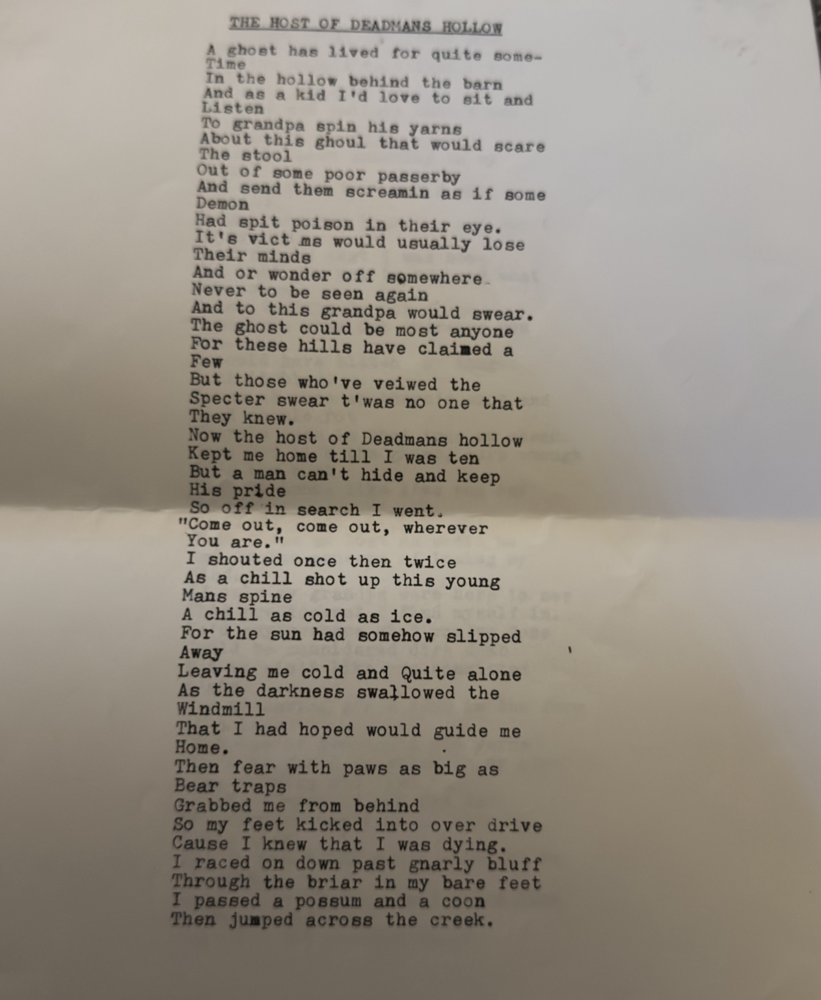
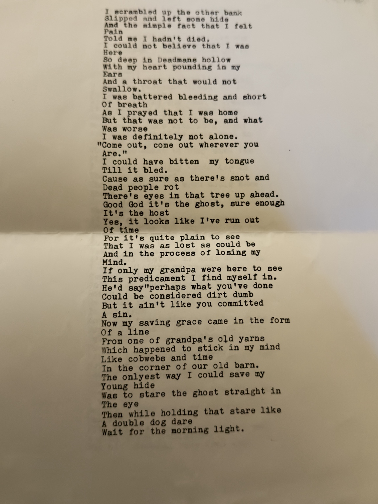
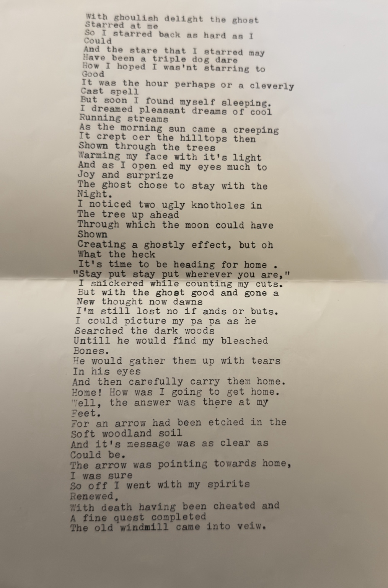
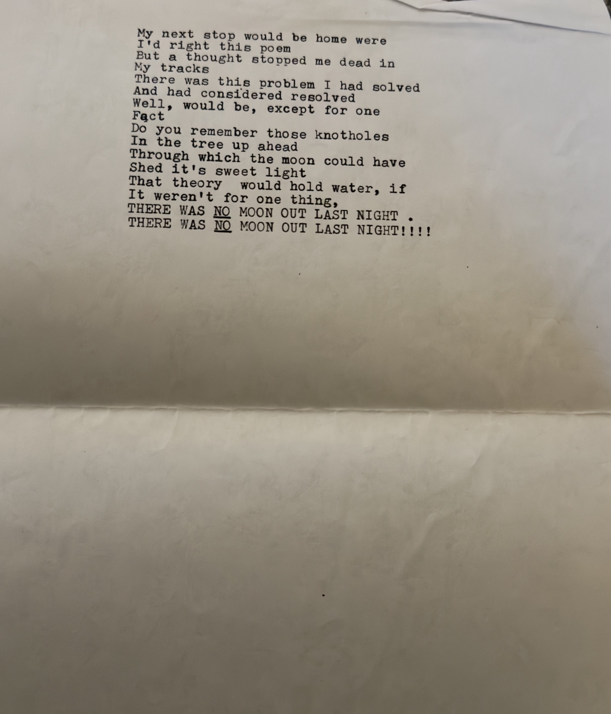

From Dad's typed pages
The Host of Deadmans Hollow
During our conversation about storytelling, my dad began reciting this poem but couldn't remember the rest. By coincidence, I had a copy. These are all four pages, in order.



